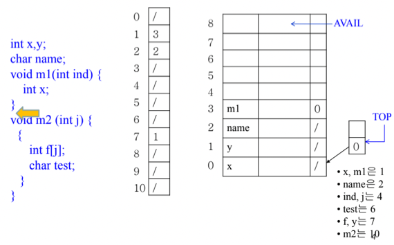
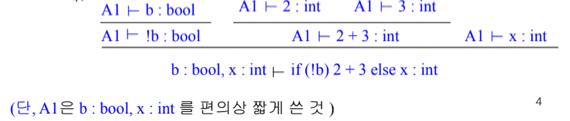

충남대학교 컴퓨터공학과 조은선 교수님의 "컴파일러 개론" 강의를 필기한 내용입니다.
다소 잘못된 내용과 구어적 표현 이 포함되어 있을 수 있습니다.
Semantic Analysis
- Static Semantic : 컴파일 단계에서 잡아낼 수 있는 프로그램 문맥 분석
- 거의 Type checking이랑 같은 의미라고 생각해도 무방하다
- Dynamic Semantic : 런타임 단계에서 잡아낼 수 있는 프로그램 문맥 분석
- 여기서 Semantic이란 그냥 프로그램의 Construct들 (변수, 객체, 식, 문장 등) 이 올바르게 사용되었나 확인하는 것
- 보통 Scope적인 측면 - 변수의 접근 가능 범위와 Type적인 측면 - Declaration과 Assignment의 자료형이 맞는가를 체크하게 된다
Scope
- Lifetime하고 Scope은 엄연히 다른것이다
- Lifetime은 어떤 변수가 존재하는 시간 적인 개념이고
- Scope은 어떤 변수에 접근할 수 있는 영역, 공간 적인 개념이다
- Lexical Scope : 이건 Scope의 풀네임이라고 할 수 있는데
- 문자적(Textual)으로 봤을 때 어떤 변수에 접근할 수 있는 특정 범위 라고 생각하면 됨
- 이게 말이 어려워서 그런데
- 그냥 Textual이라는 것은 우리가 코드를 눈으로 봤을때 i번째줄에서 k번째 줄까지가 이 변수의 Scope 이라는 것을 알 수 있듯이 말 그대로 코드를 우리가 글읽듯이 읽었을 때 알아낼 수 있는 변수의 범위를 말하는 거다
- 그래서 식별자의 Scope은 그냥 그 식별자 선언을 참조할 수 있는 Lexical scope인 것
- 뭔말알?
- 참고로 C언어에서 goto는 label이 선언된 scope 내에서만 사용해야된다 - label이 딴데있으면 걸로 가면 안된다 이말이야
Symbol Table
- 말그대로 식별자들에 대한 정보들을 Table의 형태로 저장하는 것이다

- 위처럼 식별자 이름과 분류(함수, 변수, 인자 등등), 자료형, 여러 속성들(scope지정자, 상수 등등)들을 저장하게 된다
- 식별자가 선언될때 저러한 정보들을 테이블에 저장해놓고 의미분석할때 이거 보면서 자료형 체크하거나 코드 생성단계에서 메모리 할당할때도 보면서 얼마나 할당해야할지 알아낸다
Hierarchical Symbol Table
- 일단 Lexical Scope이 달라지면 참조할 수 있는 식별자의 범위도 당연히 달라지기 때문에 Lexical Scope마다 Symbol Table을 둘 수도 있다
- 하지만 대부분의 Block-structured language에서 Lexical Scope는 Nested구조, Hierarchical한 구조를 갖는 경우가 대부분이므로 Symbol Table도 이러한 구조로 만들게 된다

- 그래서 위 그림처럼 테이블을 구성하는거임

- 이러한 구조에서 식별자를 참조할때는 현재의 Scope에서 상위 Scope으로 올라가며 식별자가 존재하는지 확인하고 없다면 에러를 출력하게 한다
Implementation
- 일단 AST가 만들어진 후에 Symbol Table을 만들 수 있다
- AST가 Symbol Table의 선행조건인 셈
- 그리고 Symbol Table이 제공해야되는 기능은
- 식별자가 선언될때 Insert하는 기능이 있어야 할 것이고
- 식별자가 참조될때 Lookup - 검색하는 기능이 있어야 하것제
- 실제로 Symbol table을 구현할때는 위에서 본 계층구조를 그대로 본뜨지는 않는다
- 효율성을 위해서 다르게 함
- 일단 식별자의 이름은 식별자 문자열 크기가 가변적이고 관리가 힘들기 때문에 식별자 문자열만을 모아놓는 String pool을 만들어놓고 여기의 한 원소를 참조하는 포인터로 대체한다
- 뭐 Table한개에 대해서는 그냥 Hash table을 사용함
- 그리고 계층구조를 만들때에는 N-ary tree를 쓸거같지만 실제로는 Stack을 사용한다
- 생각해보면 Nested구조는 Stack을 통해서 구현될 수 있기 때문
- 뭐 옛날에 괄호쌍문제 같은거 풀때도 Stack을 이용했잖여
- 프로그램이 실행되는 과정에서도 block이 끝나면 그 scope에 대한 Table은 어차피 필요가 없기 때문에 전체 구조에서 유지시키는게 아니라 버리는게 더 효율적

- 위 그림 보면 딱 감올거임
- 스택에는 Hash Table이 원소로 들어가게 되고
- 아래 빨간글씨가 스택의 변화를 보여주고 있다
- 그래서 살펴보면 Scope이 열리면 그 Scope에서의 Symbol table이 Stack에 push되고 Scope이 끝나면 pop되게 됨
- {int i, j; … }에서 {int x; l: …}로 코드가 진행될때 스택의 변화를 보면
- 어차피 두번째 scope로 가면 첫번째 scope은 참조할 수 없으니까 func f의 자식으로 두는게 아니라 버려버리는 것
- Symbol Table은 코드를 한줄한줄 읽어나가며 생성되고 한번 생성된 뒤에 계속 사용하는게 아니라 분석단계에서 동적으로 생성되면서 분석하게 되는듯
- 그래서 위 예제에서 func f scope에서는 g는 Symbol Table에 추가되지 않은 상태인 것이다
Implementation (2)
- 근데 실제로는 위와같은 방법도 안쓰고 더 최적화시킨 방법을 사용한다
- Stack과 Hash map, Array를 섞어서 구현하게 됨

- 위 그림이 저 int x;부분에 있을 때에의 스택과 해쉬맵, 배열의 모습이다
- 오른쪽 아래에 각 식별자들의 hash값들이 나와있음
- 이걸 이제 차근차근 따라가보자고
- int x, y : x의 hash값은 1이므로 hash table의 1에 array의 index 0이 들어가고 거기에 x에 대한 정보가 담긴다. 마찬가지의 방법으로 y의 hash값은 7이므로 hash table의 7에 array의 index1이 들어가고 거기에 y에 대한 정보가 담기게 된다
- char name; : 이것도 마찬가지로 흘러감
- name의 hash값은 2이므로 hash table의 2에 array의 index 2가 들어가고 array에는 name에 대한 정보들이 들어가게 된다
- void m1() : 마찬가지긴 한데 m1의 hash값이 1인데 이미 hash table의 1에 뭔가가 연결되어있어 충돌 이 나게 됨 - 이때는 새로 들어온놈을 hash table에 적어주고 기존에 있던 놈은 새로 들어온 놈이 가리키게 하는 Linked list방식으로 구현된다
- 뭐 특별하게 새로운 방법은 아니고 원래 Hash table의 작동방식 그대로 따라가는거임
- 따라서 m1이 array의 index 3에 들어가고 hash table의 1에는 array의 index 3이 채워지며 array의 index 3은 index 0을 가르키게 된다
- 그래서 옛날놈을 찾을때는 Linked link를 따라가는 방식으로 진행된다
- 옛날놈을 찾을때는 hash값을 보고 Hash table로 간 뒤에 그게 가리키는 곳을 갔다가 내가 찾는놈이 아니라는 걸 깨닫고 그놈이랑 연결된 놈으로 가서 내가 찾는놈이 맞나를 반복하는 것
- 만일 위의 예제에서 x를 찾을 때는 먼저 hash 1을 통해 array index 3으로 갔다가 그놈이 m1이기 때문에 array index 0으로 이동해 x를 찾게 되는 것
- { : 여기서 새로운 Scope이 시작되게 된다 - 새로운 Scope가 시작될때는 Stack에 새로운 Scope에 대한 정보들이 담길 array의 index가 push된다
- 이전에 배웠던 Stack Frame 이랑 동일한 방식으로 작동하는거임 - 스택에 frame이 담기는게 아니고 frame의 시작지점이 담기는 방식
- 따라서 이제 새로운 scope가 시작되었고 array의 index 4부터 저장될꺼니까 Stack에 4가 들어가 Stack top에 대한 frame이 array index 4부터 시작된다는 것을 저장 하게 됨
- (int ind) : 이건 뭐 이전에 하던거랑 똑같다 - array index 4에 드가고 hash값이 4니까 hash 4번칸에 index 4가 채워지게 되는 것
- int x; : 이번에도 충돌이 나기 때문에 원래 있던놈을 치우고 새로운게 들어간 뒤 새로운놈이 원래 있던놈을 가리키게 한다
- 근데 여기서 신기한 것은 Global과 Local의 식별자 이름과 타입 등이 같으면 Global은 Shadowing되고 Local에만 접근할 수 있는 기능이 자동으로 구현된다는 것을 알 수 있다
- 왜나면 Hash를 통해서 Linked list를 타고 가면서 만나게 되는 식별자 선언의 순서가 최근에 선언된 순서대로 방문하기 때문
- 따라서 제일 먼저 같은 이름과 타입 등을 가진 놈이 찾아지기 때문에 제일 최근에 선언된 놈이 선택되고, 따라서 오래전에 선언된 Global은 선택되지 않게 된다

- 위 그림은 Scope가 끝났을때를 보여주는 그림이다
- Scope가 끝났을때는 그냥 Stack에서 pop만 해주면 되는게 아니고 연결관계를 다 정리해줘야 한다
- 즉, Frame이 pop되며 무효화되는 array의 index들을 Hash table에서 가리키지 않게 조정해주는 작업이 필요함
- Array에서 다른 array index를 가리키지 않는 경우에는 그냥 hash table에서의 값을 nullptr로 바꿔주면 되고
- Array의 index에서 다른 array index를 가리키는 경우에는 가리키는 array index가 Stack top의 frame에 들어올때까지 재귀적으로 index를 타고 가다 Stack top frame에 들어오면 그것의 index를 hash table에서의 값으로 넣어주는 과정을 거침
- 그래서 위의 예제에서는 어케되는가
- 우선 array index 4번에 있던 ind의 경우에는 그놈 하나만 달랑 있기 때문에 hash 4에 저장되어있는 것을 array index 4가 아니라 nullptr로 바꿔준다
- 이제 array index 5번에 저장되어있던 x의 경우에는 hash 1에 저장되어있는 것을 nullptr가 아니라 x가 가리키고있던 array index 3로 바꿔주게 된다 - array index 3은 Stack top frame에 들어오기 때문에 더이상 재귀적으로 array index를 찾지 않고 3을 hash 1에 넣어줌
- 뭐 나머지 m2에 대해서는 위에서의 진행방식 동일하게 진행됨
Type
- 뭐 아는것처럼 Type은 어떤 변수같은애들이 가지게 되는 값 에 대한 설명이다
- 뭐 Predicate하기도 하다네 - 가질 수 있는 값의 범위가 제한되니까
- 그래서 Type Error는 값을 부적절하게 사용했을때를 말하는거고
- Type Error가 없을때를 타입 안정성이라고 하는데
- Type Binding - 타입 선언 - 을 하고
- Type Checking - 타입 체크 - 를 해서 타입 안정성을 보장한댄다
- Type Checking을 할때는 타입 규칙 - 뭐 int끼리 더한값은 int가 된다 같은거 - 를 세운 뒤 이것에 대해 검사하는 방식으로 진행된다네
Static & Dynamic
- Checking : 타입 검사 시점 에 대한 것
- Static Checking은 컴파일시점에 타입 검사
- Dynamic Checking은 런타임에 타입 검사
- Typing : 타입 정의 시점 에 대한 것
- Static Typing : 컴파일 전에 타입이 모두 정의되어있어야 함
- Dynamic Typing : 런타임에 타입이 정의될 수 있음
- Checking과 Typing의 차이점에 대해서는 별로 생각하지 마라 - 정의만 다르고 실질적으로는 비슷한 의미임
- Strong Typing : 타입 오류를 엄격하게 방지하는 언어
- Weak Typing : 타입 오류를 어느정도 허용하는 언어
- Sound Type System : 모든 타입 오류를 방지하도록 하는 시스템이나 타입 규칙이 잘 정의된 것
Type Expression
- 기본 타입 - int, float, char등등
- 타입 표현식
- 배열 : T[]
- 구조체(객체) : {id: T … }
- 포인터 : T*
- 함수 : T x T1 x … -> Tret
타입 규칙
- 뻔한얘기긴 한데
- 뭐 int와 float의 덧셈은 int형이어야 한다 이런 타입끼리의 연산의 결과가 뭐가 된다는 것에 대한 규칙들을 타입 규칙이라고 함
Type judgement
- 뭔가 타입얘기가 나오면서 여기 나오는 표현들이 타입스크립트랑 비슷하다는것을 느꼈을거임
- 아마 타입에 대한 이론적인 부분에서의 표현법을 타입스크립트에서 차용했기때문이 아닐까
- 타입에 대해 명시하는 표현법도 타입스크립트에서 하던거 생각하면 된다 - Expression : Type의 방식으로 명시함
- 그리고 강의듣다보면 unit이라는게 나오는데
- 이건 Expression이 아니라 Statement여서 값으로써 계산결과가 나오지는 않지만 이것을 계산하는 동안에는 타입오류가 일어나지는 않을때 unit이라고 표현한다
Type Checking
- 여기서는 너가 프언개시간에 지겹도록 그려댄 Proof Tree를 사용한다
- 그리고 이걸 그리면서 또 프언개시간에 많이 써본 기호가 나오는데
ㅏ기호이다

- 그래서 위의 Proof Tree가 자명하고 규칙만 주어진다면 그릴수 있을거같으면 된거임

- 위의 그림은 Assignment에 대한 타입 규칙 예시이고

- 위 그림은 if-else에 대한 타입 규칙 예시이다
- 물론 예시이긴하지만 많은 언어들이 차용하고있는 보편적인 규칙들이니까 읽어보도록
- 그리고 위의 예시에서 else가 없는 if문이면 거짓일 경우에 어떠한 값으로 계산된다고 말할 수 없기 때문에 else가 없는 if문은 unit이 되는 것
Control Flow Analysis
- Semantic Analysis에서는 Scope나 Type check외에 Control Flow Analysis도 수행하는데 이것은
- break이나 continue같은 애들이 올바른 위치(예를들면 반복문 안)에 들어가있는지, goto의 label이 접근할 수 있는 scope에 존재하는지 등을 검사하는 것이다
- AST를 따라가다보면 어렵게 않게 알아낼 수 있는 것들을 분석하는 것